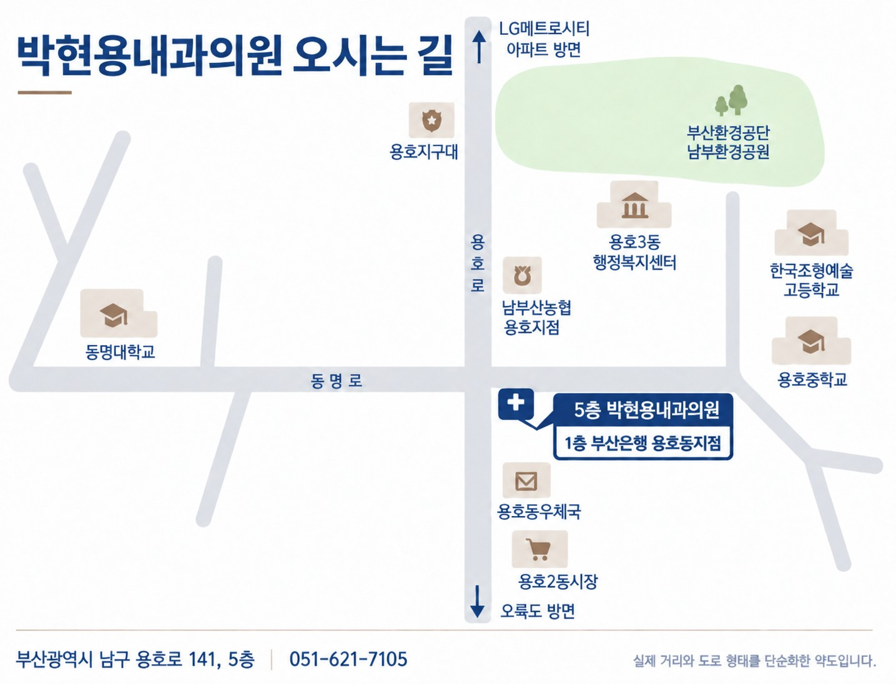

박현용내과의원 | 부산 남구 용호동 소화기내과 전문의원
국가건강검진 지정기관 · 위·대장내시경 센터
필요한 진료를 카테고리별로 빠르게 찾아보세요.
박현용 원장 · 내과전문의
- 소화기내과분과전문의 · 소화기내시경 세부전문의
- 전(前) 부산경남내과학회 회장
- 용호동 한 자리에서 2002년 부터 20년 넘게, 한 자리에서 지켜온 신뢰
진료시간
평일 09:00~18:00
토요일 08:30~13:00
점심 13:00~14:00
※ 일요일·공휴일 휴진
LOCATION
오시는 길

박현용내과의원 오시는 길
- 주소
- 부산광역시 남구 용호로 141, 5층
- 전화
- 051-621-7105
- 진료시간
평일 09:00 ~ 18:00
토요일 08:30 ~ 13:00
일·공휴일 휴진 (점심시간 13:00~14:00)- 주차안내
- 건물 내 주차장 이용 가능